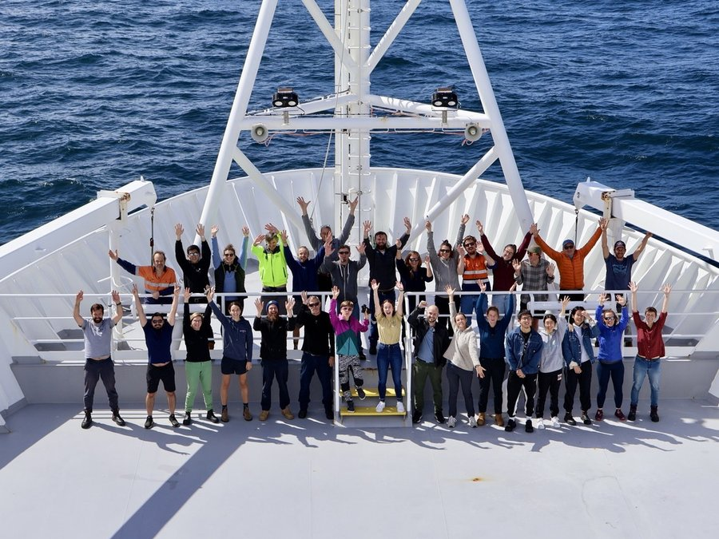

About Me
I am an oceanographer interested in ocean biogeochemical cycles, from biophysical interactions to their impacts on primary production and the ocean carbon cycle, with a particular focus on the Southern Ocean. My research integrates multiple observing platforms, including shipboard hydrography, moorings, satellite observations, and Biogeochemical-Argo (BGC-Argo) floats, to understand and quantify changes in Southern Ocean carbon uptake. Ultimately, I aim to use these observational constraints to help inform and improve ocean biogeochemical models.
My current research focuses on using observations from the BGC-Argo float array together with the Biogeochemical Southern Ocean State Estimate (B-SOSE) to investigate the role of Antarctic Winter Water in the Southern Ocean carbon cycle and its interactions with recent sea-ice change.
I received my PhD in 2026 from the University of Tasmania through a joint program with the CSIRO. Before that, I completed a first-class Honours degree at the University of Tasmania in 2022. In November 2025, I joined the GATO group at the Georgia Institute of Technology, where I work with Professor Lilian Dove to continue exploring the Southern Ocean.
Research Interests
My research interests include:
-
Antarctic Winter Water and water-mass transformation:
I am interested in how Antarctic Winter Water (WW) forms, evolves, and influences
subsurface biogeochemical inventories. My current research uses BGC-Argo float observations
and BSOSE to decompose the interactions between the recent Antarctic sea-ice decline
and WW variability. I examine how changes in WW may affect ocean primary production and
air–sea CO₂ fluxes within the sea-ice zone and potentially at lower latitudes.
I am also interested in quantifying the dissolved inorganic carbon (DIC) budget
within the WW layer and its interannual variability, particularly in response to sea-ice
changes and interactions with Circumpolar Deep Water (CDW). More broadly, my research
investigates how mixing, entrainment, and water-mass transformation connect surface
forcing, sea-ice variability, and subsurface carbon storage.
-
Southern Ocean carbon cycling and air–sea CO₂ exchange:
I am broadly interested in how physical and biogeochemical processes regulate carbon uptake,
storage, and air–sea exchange in the Southern Ocean, and in quantifying their
long-term changes and interannual variability. During my Honours research, I used
CTD hydrographic profiles and satellite observations to examine spring bloom dynamics
associated with Polar Front instability and mesoscale eddies (Yang et al., 2022, JGR: Oceans).
During my PhD, I expanded this work by integrating observations from BGC-Argo floats,
moorings, ship-based measurements, and satellites to investigate marine biogeochemical cycles.
Through these works, I developed strong experience in analysing large interdisciplinary datasets
to quantify air–sea CO₂ fluxes, primary productivity, and organic carbon export.
My research has identified the dominant role of biological processes in regulating CO₂
uptake south of Australia and highlighted the importance of mesoscale variability relative
to basin-scale climate modes (Yang et al., 2024a, Global Biogeochemical Cycles).
-
Carbon export and biological carbon pump processes:
I investigate how biological production and particle export regulate the efficiency of
the biological carbon pump. My work uses BGC-Argo observations, including optical backscatter,
chlorophyll, and oxygen-based approaches, to quantify multiple pathways of
particulate organic carbon (POC) export in the Subantarctic Zone to Southwest Australia.
These pathways include the gravitational pump, the mixed-layer pump (associated with
seasonal changes in the mixed-layer), and the eddy subduction pump
(Yang et al., 2024b, Global Biogeochemical Cycles).
This research is the first work to strictly combine float-based estimates of
carbon export and co-located sediment trap records. By combining optical and
oxygen-based methods, we have better constrained regional variability in POC export
and improved our understanding of how the biological carbon pump contributes to
regional and global ocean carbon budgets.
-
Sea-ice variability and physical–biogeochemical interactions:
I examine how sea-ice retreat influences biogeochemical variability in the seasonal sea-ice zone.
Recent dramatic declines in Antarctic sea ice have the potential to strongly affect
regional primary production, air–sea CO₂ exchange, and carbon cycling. In the final
chapter of my PhD thesis, I used machine-learning approaches to enhance BGC-Argo-based estimates
of surface pCO₂ in the Weddell Gyre. Using this improved dataset, I showed that earlier sea-ice
retreat can extend the productive season by advancing the onset and peak of phytoplankton phenology,
thereby enhancing oceanic carbon uptake in the Weddell Gyre (Yang et al., 2025, under review).
This work has motivated my broader interest in understanding the coupled physical and
biogeochemical processes that regulate carbon cycling in the Antarctic seasonal sea-ice zone,
particularly under ongoing changes in sea-ice extent and timing.

Global Biogeochemical Cycles · 2024
Combines autonomous float observations and sediment traps to examine carbon export in the Subantarctic Zone.

Global Biogeochemical Cycles · 2024
Uses sustained observations to diagnose the physical and biogeochemical controls on air–sea CO₂ exchange.

